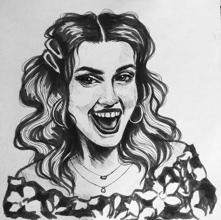

Meet Me
Loves: To learn, bike, dance, adventure, calligraphy, and listen to the Reciepts podcast.
Experience: I studied Mathematics at the University of Leeds, in which I developed my skills in Python and R.
Current: From living in China to travelling and moving to Australia. I have completed Python 1 and 2 from Robociti Women in Python course. Self-learning programs HTML, CSS and Javascript.
Future goals: Aspiring Software Developer; ready to delve back into the coding world by learning new languages and their applications. My aim is to produce a range of projects with these languages and keep my work on this website. Click here to discover my work.